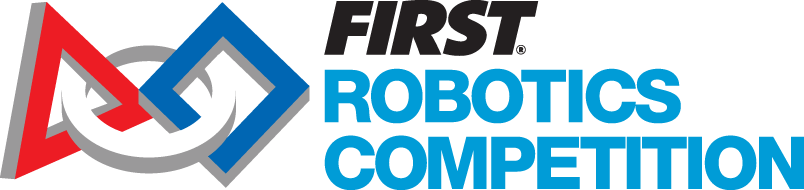

FRC Nedir?
FRC (FIRST Robotics Competition), FIRST tarafından düzenlenen dört yarışmadan (FIRST Lego League , FIRST Lego League Jr, FIRST Robotics Competition ve FIRST Tech Challange) bir tanesidir.

Uluslararası liseler arası robotik yarışmasıdır. Her yıl lise öğrencileri altı haftalık sınırlı bir sürecin içinde sınırlı kaynaklarla 56 kilogram ağırlığında belirli görevleri yapan bir robot üretirler.Robotların topları hedef yerlere atmak, denge kirişlerinde dengede durmak ve barlara asılmak gibi görevleri tamamlamaları gerekir . FRC , iki eşsiz değer üzerine inşa edilmiş bir kültürdür . “ Duyarlı Profesyonellik ” FIRST ’ ün doğası gereği bulunan saygı çerçevesi içindeki rekabeti ifade eder. “ İş Birliği ” ise öğrencilerin çalışmalarını takımları içinde tam bir bütünlük ve iş birliği ile yürüttüklerini gösterir.